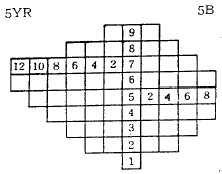
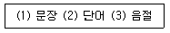
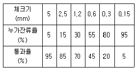

실내건축기사(구) (2003-05-25 기출문제)
1과목: 실내디자인론
1. 건축화 조명중 천장, 벽의 구조체에 의해 광원의 빛이 천장 또는 벽면으로 가려지게 하여 반사광으로 간접 조명하는 방식은?
- 밸런스 조명
- 코브 조명
- 코니스 조명
- 캐노피 조명
(정답률: 67%)

2. 상업공간 실내계획 프로세스중 기획단계에서 필요없는 것은?
- 소비자(대상고객의 소비패턴 조사)
- 상품의 특성과 구성(효용성 조사)
- 재료(재료의 물성과 가공방법 조사)
- 입지적 특성(주변환경 여건 조사)
(정답률: 66%)
3. 일반적인 주거공간의 각실 배치방법 중 가장 적절하지 못한 것은?
- 거실-남쪽
- 아동실,노인실-남쪽
- 현관-동쪽이나 서쪽
- 부엌,욕실-서쪽
(정답률: 57%)
4. 오픈 플래닝(open planning)에 관한 설명 중 적합치 않은 것은?
- 개방된 공간으로 계획하는 것으로 소음이나 시각적 문제는 고려하지 않아도 된다.
- 실내공간에 있어 내부공간의 분할을 최소한으로 나누어 계획하는 것이다.
- 고정된 벽체보다는 가동간막이를 사용하여 공간에 융통성을 부여한다.
- 오픈플래닝의 장점을 이용하여 공간사용을 접목시킨 것이 원룸시스템(one room system)이다.
(정답률: 78%)
5. 모듈러 코디네이션(Modular coordination)의 설명중 부적당한 것은?
- 재료부품에서 설계시공에 이르는 건축생산 전반에 걸친 치수상의 유기적 연계성을 만드는 것이다.
- 실내디자인과는 관계되지만 설비나 구조계획과는 무관한 설계시스템이다.
- 설계와 시공을 연결시키는 치수시스템으로 실내와 가구분야까지 확장,적용될 수 있다.
- 생산의 합리화와 시공비 절감효과를 유도할 수 있다.
(정답률: 74%)
6. 게슈탈트의 지각심리에 관한 설명으로 옳은 것은?
- 접근성은 시각적 요소들이 유사할 경우 서로 관련되어 보이는 현상이다.
- 단순화의 원리는 대상을 될수 있는 한 간단한 구조로 지각하려는 경향을 말한다.
- 도형과 배경의 법칙은 어떤 사물이든 도형과 배경으로 동시에 뚜렷이 고정되어 보이는 현상이다.
- 폐쇄성이란 시각요소들이 불완전할 경우 확장되지 않고 불완전한 자체로 보이는 현상이다.
(정답률: 39%)
7. 부엌작업대의 가장 효율적인 배치 순서는?
- 준비대 - 조리대 - 개수대 - 가열대 - 배선대
- 준비대 - 개수대 - 조리대 - 가열대 - 배선대
- 준비대 - 가열대 - 조리대 - 개수대 - 배선대
- 준비대 - 조리대 - 개수대 - 배선대 - 가열대
(정답률: 61%)
8. 재료의 질감(texture)에 대한 설명으로 옳지 않은 것은?
- 매끄러운 재료는 일반적으로 낮은 반사율을 나타내며 공간을 축소되어 보이게 한다.
- 재료의 질감대비를 통해 실내공간의 변화와 다양성을 꾀할 수 있다.
- 질감 선택시 고려해야 할 사항은 스케일, 빛의 반사와 흡수, 촉감 등의 요소이다.
- 목재와 같은 자연 재료의 질감은 따뜻함과 친근감을 부여한다.
(정답률: 69%)
9. 르꼬르뷔지에의 모듈러(Modulor)와 가장 관계가 깊은 디자인 원리는?
- 리듬
- 강조
- 조화
- 비례
(정답률: 76%)
10. 등받이나 팔걸이가 없이 천으로 씌운 낮은 의자로 발을 올려 놓는데 사용되는 것은?
- 라운지체어(lounge chair)
- 다이닝체어(dinning chair)
- 오토만(ottoman)
- 플로어쿠션(floor cushion)
(정답률: 75%)
11. 천장에 매달려 조명하는 방식으로 조명기구 자체가 빛을 발하는 악세사리 역할을 하는 조명방식은?
- 다운라이트(down light)
- 스포트라이트(spot light)
- 펜던트(pendant)
- 브라켓(bracket)
(정답률: 79%)
12. 실내디자인의 기본계획에 있어 선행조건으로 계획조건을 파악해야 한다. 그런 조건중 외부조건이 되는 건축조건이 아닌 것은?
- 건물의 설비
- 건물의 구조
- 건물의 입지
- 건물의 경제적 평가
(정답률: 80%)
13. 재료의 질감에 대한 다음 설명 중 옳은 것은?
- 질감은 어떤 물체가 갖고 있는 표면적 특질을 말하며 촉각적인 것과 시각적인 것이 있다.
- 시각적으로 매끄러운 질감은 만져보아도 매끄러워야 한다.
- 구조적 질감은 기본구조에 무엇인가를 덧붙인 것이다.
- 빛을 많이 반사시키는 재질은 그 재질의 색을 흐려보이게 한다.
(정답률: 65%)
14. 장식물의 선정과 배치상의 일반적인 주의사항과 관련이 먼 것은?
- 좋고 귀한 것은 돋보일 수 있도록 많이 진열한다.
- 형태, 스타일, 색상 등이 실내공간과 어울리도록 한다.
- 계절에 따른 변화를 시도할 수 있는 여지를 남긴다.
- 여러 장식품들이 서로 균형을 유지하도록 배치한다.
(정답률: 78%)
15. 전시공간의 실내계획에 관한 기술 중 옳지 않은 것은?
- 전시장 내의 자료 보존을 위하여 자료가 직사광선에 노출되지 않도록 한다.
- 전시장 바닥의 재료는 관람에 집중할 수 있도록 발소리가 나지 않는 재료를 사용한다.
- 천장면을 메쉬(mesh)나 루버식으로 처리하면 설비기기가 눈에 잘 띄이지 않아 시각적으로 편안하다.
- 전시장의 벽면은 예술적인 분위기를 주기 위해 여러가지 색으로 화려하게 한다.
(정답률: 82%)
16. 실내디자인에 관한 설명 중 가장 옳지 않은 것은?
- 실내디자인은 내부공간에 대한 계획설계를 말한다.
- 실내디자인은 목적을 위한 행위로 그 자체가 목적이 아니라 특정한 효과를 얻기 위한 수단이다.
- 실내디자인은 미술의 한 분야로 미적인 측면에서 실내를 아름답게 꾸미는 것만을 의미한다.
- 실내디자인은 인간이 생활하는 실내공간을 보다 아름답고 능률적이며 쾌적한 환경으로 창조하는 디자인 행위 일체를 말한다.
(정답률: 74%)
17. 긴 직사각형 또는 다각형의 각 전시실이 연속적으로 동선을 형성하고 있으며 비교적 소규모 대지에서 효율적인 전시공간의 형식은?
- 연속순회 형식
- 갤러리 및 복도형
- 중앙홀 형식
- 중정 형식
(정답률: 53%)
18. 디스플레이의 정보전달요소로 옳지 않은 것은?
- 외부 및 내부 디스플레이와 진열장 연출에 의한 스케일 등의 위계성
- 사용목적, 기능성, 신뢰감, 경제성에 관한 상품성
- 계절, 행사, 새 상품의 입하에 대한 시기성
- 정치, 경제, 문화 등의 생활성
(정답률: 41%)
19. 건축과 실내디자인이 구분되지 않은 채, 함께 작업되어 오다가 어떠한 배경에 의해서 실내디자인이 독립된 영역으로 발전되어졌는가?
- 정치화, 통합화
- 전문화, 통합화
- 세분화, 정치화
- 세분화, 전문화
(정답률: 81%)
20. 디자인 원리 중 점이(gradation)에 대한 설명으로 가장 적당한 것은?
- 색채, 문양, 질감, 선이나 형태가 되풀이됨으로써 이어지는 리듬
- 중심축에서 밖으로 선이 퍼져 나가는 리듬의 일종
- 원형 아치, 늘어진 커튼이나 둥근 의자 등에서 볼 수있는 리듬
- 공간, 형태, 색상 등의 점차적인 변화로 생기는 리듬
(정답률: 57%)
2과목: 색채학
21. 순색과 무채색의 포화도 비율이 순색의 순도를 1로 할 때 순도 1/4이라 함은?
- 색감30%:회색감70%
- 색감50%:회색감50%
- 색감25%:회색감75%
- 색감75%:회색감25%
(정답률: 50%)
22. 빨강색의 육류나 과일이 노랑색 접시위에 담겨져 있을때 육류와 과일의 빨강색이 자색으로 보여 신선미를 감소시킨다. 이러한 현상은 무엇 때문에 일어나는가?
- 색의 동화(color Assimilation)
- 잔상(After Image)
- 항상성(Constancy)
- 기억색(Memory color)
(정답률: 16%)
23. 다음 그림에서 볼 수 있는 가장 올바른 것은?

- 동일 채도면
- 동일 명도면
- 보색관계의 색상면
- 연두의 채도 12
(정답률: 50%)
24. 오스트발트 등가색환(24색상)에 있어서의 조화를 기호로 나타낸 것 중 보색조화에 해당하는 것은?
- 2ic - 4ic
- 8ni - 14ni
- 4Pg - 12Pg
- 2Pa - 14Pa
(정답률: 40%)
25. 다음 유채색과 무채색에 대한 설명 중 잘못된 것은?
- 유채색이란 채도가 있는 색이란 뜻이다.
- 빨강, 노랑 등의 색감을 미세한 정도로 느낄 수 있는 것은 무채색으로 구분한다.
- 순수한 무채색은 검정, 백색을 포함하여 그 사이 색을 말한다.
- 반사율이 약 85%인 경우는 흰색, 약 30%정도이면 회색, 약 3%정도는 검정이다.
(정답률: 69%)
26. 한국의 전통색 중 동쪽을 의미하며 봄을 의미하는 색은 5정색 중 어떤색인가?
- 청색
- 녹색
- 백색
- 홍색
(정답률: 77%)
27. 색채조화론과 관련이 없는 것은?
- 질서의 원리
- 모호성의 원리
- 유사의 원리
- 동류의 원리
(정답률: 43%)
28. 눈의 구조에 있어서 카메라의 렌즈에 해당되는 것은?
- 각막
- 홍채
- 수정체
- 망막
(정답률: 64%)
29. TV 칼라 CM에서 고려해야 할 특징적인 사항에 관한 내용 중 잘못된 것은?
- 일반 색채와는 달리 고휘도의 색조가 생긴다.
- 색채의 계시적인 배색법을 고려해야 한다.
- 재현성이 좋은색과 그렇지 않은 색들이 있다.
- 짧은 시간이므로 한가지 색조로 일관하는 것이 효과 적이다.
(정답률: 72%)
30. 다음 중 작업장의 광선 조절을 위한 차광창의 재료와 색으로 가장 적합한 것은?
- 백색천 재료
- 백색 페인트의 망창
- 불연재의 회색 브라인드
- 금속재의 검정발 형태
(정답률: 62%)
31. 먼셀의 색입체에서 중심부쪽으로 갈수록 나타나는 현상 중 가장 올바른 것은?
- 명도가 높아지며 채도는 변화없다.
- 명도가 낮아지며 채도는 높아진다.
- 명도는 중명도가 되며 채도는 낮아진다.
- 명도는 변화가 없으며 채도는 중간이 된다.
(정답률: 47%)
32. 백지를 밝은 곳에서 볼 때와 어두운 곳에서 볼 때 반사량이 다르기 때문에 어두운 곳에서 볼 때 더 어둡게 보이지만 그러나 흰색으로 지각하는 현상은?
- 색의 항상성
- 색의 시인성
- 색의 주목성
- 색의 기억성
(정답률: 49%)
33. 색채의 온도감에 있어서 중성색은?
- 적색
- 주황색
- 청색
- 자주색
(정답률: 43%)
34. 한 가지 색이 다른 색으로 옮겨갈 때 진행되는 색의 변조를 뜻하는 것은?
- 그라데이션
- 색의 잔상
- 등간격의 조화
- 주조색의 조화
(정답률: 60%)
35. 다음 눈의 구조적인 기능 설명 중 틀린 것은?
- 간상체는 주로 어두운 빛에 대한 감도는 높고 색을 구별 못한다.
- 수정체는 빛을 굴절시켜서 망막에 이르는 상을 조절한다.
- 맹점은 중추를 통하는 지점에 시세포가 없어서 여기서 모인상을 볼 수 없는 지점을 말한다.
- 홍체는 주목하는 밝기와 거리를 망막에 일치 시키는 기능을 하고 있다.
(정답률: 31%)
36. 일반적인 색채조화에 대한 설명 중 틀린 것은?
- 2색 사이의 명도차가 크면 색상차나 채도차보다 조화되기 어렵다.
- 동일 또는 유사색상 끼리의 배색은 색조만 달리 해주면 조화되기 쉽다.
- 무채색은 어떠한 색과도 조화되기 쉽다.
- 색상, 명도, 채도의 차이가 비교적 적고, 이 색채의 속성들이 공통적으로 가까우면 조화되기 쉽다.
(정답률: 36%)
37. 오스트발트 표색계의 설명 중 틀린 것은?
- 24색상환이다.
- 사용상에서 보면 혼색계이다.
- 색상환에서 마주보는 쪽은 보색이다.
- 헤링이 반대색설을 기본으로 하였다.
(정답률: 43%)
38. 일반적인 색 느낌의 표현으로 안식, 평정, 친애, 평화의 감정 색은?
- 보라
- 파랑
- 녹색
- 주황
(정답률: 47%)
39. 조명에 의한 색채변화 설명 중 잘못된 것은?
- 청색은 주광색 형광등에서 변하지 않는다.
- 적색은 백열등에서 더욱 선명하다.
- 청색은 백열등에서 약간 녹색 기미를 띈다.
- 나트륨등에서는 적색이 강조된다.
(정답률: 25%)
40. 색채를 표시할 때는 HV/C로 표시한다. C가 뜻하는 것은?
- 색상
- 명도
- 채도
- 대비
(정답률: 39%)
3과목: 인간공학
41. 사람의 근육은 운동(훈련)을 하면 근육이 발달하고 힘이 세어지는데 그 이유는?
- 근육섬유(fiber)의 숫자가 증가하기 때문
- 근육의 섬유 숫자는 일정하나 각각의 섬유가 발달하기 때문
- 근육의 섬유수도 늘고 각각의 섬유도 발달하기 때문
- 지방질의 축적이 이루어지기 때문
(정답률: 61%)
42. 지시장치의 적부판정법 항목으로 부적절한 것은?
- 지시가 변하는 것을 쉽게 발견할 수 있는지
- 그 계기는 다른 계기와 일치하고 있는지
- 필요로 하는 제어의 움직임과 계기의 움직임이 직관적으로 일치하고 있는지
- 계기는 요구된 방법으로 빨리 읽을수 있는지
(정답률: 52%)
43. 외부의 자극과 인간의 기대가 서로 일치하는 것을 무엇이라 하는가?
- 양립성(compatibility)
- 사용성(usability)
- 일관성(consistency)
- 신뢰성(reliability)
(정답률: 43%)
44. 다음 중 인체측정자료의 원리에서 최소 집단치를 적용해야 하는 것은?
- 등산용 로프의 강도
- 문틀 높이
- 제어버튼과 조작자 사이의 거리
- 비행기에서 비상 탈출구 크기
(정답률: 60%)
45. 인체 골격의 주요 기능이 아닌 것은?
- 수축, 이완
- 체강내의 장기보호
- 조혈작용
- 골격근의 기능적 수축에 따른 수동(受動)운동
(정답률: 40%)
46. 다음 중 소음의 해결책으로 적합하지 않은 것은?
- 융단으로 흡음제 역할을 하도록 한다.
- 바닥을 목재나 소판으로 만든다.
- 마주보는 문은 서로 엇갈리게 배치한다.
- 음원을 격리 시킨다.
(정답률: 45%)
47. 실내조명에 대한 일반적인 설명 중 올바른 것은?
- 조명기구는 조작이 흥미롭고, 복잡한 구조로 형성된것이 바람직하다.
- 실내 장식품의 조명은 명시와 분위기를 각각 별도로 고려해야 한다.
- 주택공간의 조명은 각 공간의 성격과 기능에 적합하도록 계획되어야 한다.
- 장시간의 시(視)작업이 필요한 작업공간에는 밝은 백열등을 사용하는 것이 가장 바람직하다.
(정답률: 66%)
48. 인간과 기계간의 기능배분에 있어서 고려해야 하는 사항으로 적절하지 않는 것은?
- 인간이 작업을 수행하는데 필요한 훈련이 어려우면 기계가 그 작업을 대신한다.
- 소요동작의 난이도를 보아 결정한다.
- 경제성을 비교하여 결정한다.
- 기계를 고려할 경우, 유지보수의 용이성을 함께 고려하여 결정한다.
(정답률: 38%)
49. 페달을 밟을 때 큰 힘을 필요로 한다. 다음 중 가장 알맞은 설계 방법은?
- 발바닥 전체로 밟도록 설계
- 발끝만으로 밟도록 설계
- 발뒷꿈치로 밟도록 설계
- 발앞부분으로 밟도록 설계
(정답률: 40%)
50. 대상물체를 시각적으로 인식할 때 보다 잘 인식할 수 있는 경우는?
- 물체가 움직인다.
- 물체의 크기가 작다.
- 물체와 배경과의 대비가 좋다.
- 물체가 멀리 있다.
(정답률: 58%)
51. 압박(stress)의 주요 근원 중 환경에 따라 생기는 생리적인 원인은?
- 정보의 과부하
- 소음,진동
- 중노동
- 수면 부족
(정답률: 37%)
52. 다음 조명과 관련된 설명 중 가장 올바른 것은?
- 실내의 빛을 효과적으로 배분하기 위해서는 반사율이 높은 표면이 좋다.
- 주어진 장소와 주위의 광도(luminance) 비율은 사무실에서 보통 3 : 1이다.
- 실내 면의 추천 반사율은 천장에서 바닥으로 갈수록 증가하는 것이 좋다.
- 광원으로 부터의 직사휘광을 처리하는 방법은 광원의 휘도를 늘이고 수를 줄인다.
(정답률: 47%)
53. 다음 중 시각에 대한 설명이 맞는 것은?
- 시선이동 - 한 눈이 한곳으로 혼란을 일으키며 움직임
- 폭주작용 - 한 눈으로 같은 점을 볼 수 있게 하는 것으로 안근과 홍체의 협동에 의해 이루어짐
- 원근조절 - 멀거나 가까운 물체를 볼 때 각막을 변화시키지 않고 초점을 맞추는 작용
- 시야 - 어느 한점에 눈을 돌렸을 때 보이는 범위를 시각으로 나타낸 것
(정답률: 54%)
54. 다음 소리의 특성 중 잘못된 것은?
- 소음은 단시간일 경우 근육노동에서 능률을 향상시킬 수도 있다.
- 정신적인 일에서도 소음은 순응된다.
- 불규칙적 소리는 사람을 초조하게 한다.
- 낮은 진동수의 소음이 높은 진동수의 소음보다 시끄럽다.
(정답률: 53%)
55. 다음 중 음에 관한 단위가 아닌 것은?
- Phon
- Sone
- dB
- Lux
(정답률: 75%)
56. 지각에 영향을 미치는 게스탈트(Gestalt)의 4법칙이 아닌 것은?
- 접근성
- 유사성
- 연속성
- 다양성
(정답률: 63%)
57. 통화이해도가 높은데서 낮은 순서로 바르게 정리 된것은?

- 1 - 2 - 3
- 3 - 2 - 1
- 2 - 3 - 1
- 1 - 3 - 2
(정답률: 38%)
58. 기온이 너무 낮을 경우 일어나는 반응이 아닌 것은?
- 떤다.
- 관절과 근육이 딱딱해진다.
- 인체의 열을 주위의 공기에 방산하지 못한다.
- 저속도의 기류에도 몸에 바람을 느낀다.
(정답률: 48%)
59. 과학적 관리법의 창시자인 테일러(Fredrick W.Taylor)가 1881년 생각해낸 작업연구방법은?
- 시간연구
- 동작연구
- 작업환경연구
- 노동과학연구
(정답률: 12%)
60. 동적(動的)표시장치의 설계에 대한 설명으로 맞는 것은?
- 계수형(計數型)표시장치의 판독오차는 원형표시장치보다 많고 판독시간도 길다.
- 동침형(動針型)표시장치는 기본적으로 정성적인 눈금을 정량적으로 사용하게 되어 대략적인 편차나 고도를 읽을 때는 적합치가 않다.
- 동목형(動目型)표시장치는 계기반(panel)이 공간을 적게 차지하는 잇점이 있다.
- 동침형(動針型)표시장치는 전력계나 택시요금계기와 같이 기계적으로 숫자가 표시되는 형이다.
(정답률: 17%)
4과목: 건축재료
61. 목재의 건조방법중 인공건조가 아닌 것은?
- 열기법
- 진공법
- 건조제법
- 침수건조법
(정답률: 50%)
62. 다음중 벽의 모르타르바름 바탕용으로 좋은 금속제품은?
- 메탈라스(metal lath)
- 데크플레이트(deck plate)
- 와이어메시(wire mesh)
- 조이너(joiner)
(정답률: 19%)
63. 작은 강구 또는 다이어먼드 추를 강재 표면에 부딪히게하여 오목하게 들어가는 상황에 따라 판정하는 시험은?
- 강도 (strength)시험
- 경도 (hardness)시험
- 인성 (toughness)시험
- 취성 (brittleness)시험
(정답률: 31%)
64. 면처리 타일이 아닌 것은?
- 스크랫치 타일
- 태피스트리 타일
- 천무늬 타일
- 보더 타일
(정답률: 43%)
65. 톱밥을 압축가공해서 목재가 가진 리그닌 단백질을 이용하여 목재섬유를 고착시켜 만든 것으로 습기에 약하고 무게가 많이 나가지만 마감이 깔끔한 인조 목재판은?
- 합판
- 집성목재
- MDF
- 코르크판
(정답률: 79%)
66. 다음은 열가소성 수지에 대한 설명이다. 틀린 것은?
- 성형방법은 압축성형이나 적층성형, 이송성형 등을 사용한다.
- 아크릴수지, 불소수지 등이 이에 속한다.
- 가열하면 분자결합이 감소하여 부드러워지고 냉각하면 단단한 상태로 되는 성질이 있다.
- 일반적으로 투광성이 좋다.
(정답률: 32%)
67. 콘트리트를 혼합할 때 염화마그네슘을 사용하는 주된 이유는?
- 방수성을 증가하기 위함이다.
- 동해를 방지하기 위함이다.
- 장기강도를 증가시키기 위함이다.
- 콘크리트의 비빔조건을 좋게하기 위함이다.
(정답률: 40%)
68. 다음 바름벽 재료의 분류와 역할이 적합하지 않은 것은?
- 결합재료: 경화되어 바름벽에 필요한 강도를 발휘시키기 위한 재료로서, 바름벽의 기본 소재이다.
- 보강재료: 균열방지를 위하여 부분적으로 사용되는 선상 또는 메쉬상의 재료이다.
- 부착재료: 못, 스테플, 커터침 등 바름벽 마감과 바탕재료를 붙이는 역할을 하는 재료이다.
- 바탕재료: 시공성, 균열, 탈락방지를 위하여 첨가되는 재료이다.
(정답률: 63%)
69. 목재바탕의 무늬를 살리기 위한 도장법은?
- 에나멜페인트 도장법
- 유성페인트 도장법
- 수성페인트 도장법
- 클리어래커 도장법
(정답률: 60%)
70. 석회암이 변성된 것으로 강도가 높고 색채와 결이 아름다우나, 풍화하기 쉬우므로 주로 내장재로 사용되는 것은?
- 화강암
- 안산암
- 응회암
- 대리석
(정답률: 55%)
71. 다음 중 통풍이 잘 되지 않는 지하실의 미장재료로서 가장 적당하지 않은 것은?
- 시멘트 모르타르
- 석고 플라스터
- 돌로마이트 플라스터
- 킨즈 시멘트
(정답률: 27%)
72. 다음 중 인조석에 대한 설명이 잘못된 것은?
- 각종 재료를 혼합 성형한 천연석의 모조품이다.
- 주로 바닥의 마무리 재료로 쓰인다.
- 안산암을 종석으로 한 것을 테라조라 부른다.
- 의석도 인조석의 일종이다.
(정답률: 26%)
73. 투명성, 치수정도, 기계적 강도, 내수성은 좋지만 내충격성이 약하며, 발포제를 사용하여 넓은 판으로 만들어 단열재로서 널리 사용되며, 장식품과 일용품으로도 성형하여 사용되는 열가소성 수지는?
- 염화비닐수지
- 폴리스티렌수지
- 폴리아미드수지
- 폴리에틸렌수지
(정답률: 27%)
74. 바닥용으로 사용되는 모자이크 타일의 재질로서 가장 적당한 것은?
- 도기질
- 자기질
- 석기질
- 토기질
(정답률: 75%)
75. 도장재료를 사용하는 목적이 아닌 것은?
- 강도증가
- 표면보호 및 미화
- 방부, 방충
- 녹방지
(정답률: 80%)
76. 모래의 체가름시험 결과표에서 조립율(FM)과 모래의 판정이 맞는 것은?

- 2.80, 굵은 모래
- 2.80, 보통 모래
- 3.20, 굵은 모래
- 3.20, 보통 모래
(정답률: 50%)
77. 굳지 않은 콘크리트의 성능평가에서 가동성, 안정성을 지배하는 요인으로 변형의 속도와 저항력에 의해서 결정되는 점성의 강하기에 관한 용어는?
- 펌퍼빌리티(Pumpability)
- 피니시빌리티(Finishability)
- 스테빌리티(Stability)
- 프라스티시티(Plasticity)
(정답률: 34%)
78. 강을 적당한 온도(800℃∼1000℃)로 가열하여 소정의 시간까지 유지한 후에 로(爐) 내부에서 천천히 냉각시키는 열처리법은?
- 뜨임질 (tempering)
- 담금질 (quenching)
- 불림 (normalizing)
- 풀림 (annealing)
(정답률: 20%)
79. 유리에 대한 설명 중 옳지 않은 것은?
- 망입유리는 화재시 개구부에서의 연소를 방지하는 효과가 있으며, 유리파편이 거의 튀지 않는다.
- 복층유리는 단판유리보다 단열효과가 우수하므로 냉∙난방 부하를 경감시킬 수 있다.
- 강화유리는 파손시 파편이 작기 때문에 파편에 의한 손상사고를 줄일 수 있다.
- 열선흡수유리는 2개의 플로트 판유리 사이에 중간막을 접착시킨 것으로 태양 방사에너지의 40~60% 정도를 투과하기 때문에 여름철 냉방부하를 감소시킨다.
(정답률: 39%)
80. 다음 목재의 방화에 관한 설명중 옳지 않은 것은?
- 목재 표면에 방화페인트 등을 도포하여 화염의 접근을 방지한다.
- 암모니아염류의 약제를 도포 또는 주입하여 가연성가스의 발생을 적게 하거나 인화를 곤란하게 한다.
- 크레오소트 오일을 사용하여 가연성 분해가스의 발산을 방지한다.
- 목재표면에 플라스터바름을 하여 위험온도에 달하지 않도록 한다.
(정답률: 47%)
5과목: 건축일반
81. 붉은집(Red House)의 건축적 특성이 아닌 것은?
- 평면형태가 대칭형이다.
- 지붕이 급경사의 형태이다.
- 벽체의 입면에 붉은 벽돌이 그대로 나타나 있다.
- 정방형, 장방형, 원형, 포인티드 아치 등의 다양한 형태의 개구부가 나타나 있다.
(정답률: 31%)
82. 네덜란드에서 암스테르담파와 대립한 것으로 단순, 명쾌, 획일, 간결, 객관성을 미학적, 윤리적 기초로 삼은 근대운동은?
- Art Nouveau
- De stijl
- Jugendstill
- Chicago School
(정답률: 43%)
83. 로코코 양식의 특징에 대한 설명 중 거리가 먼 것은?
- 공적인 생활을 위주로 한 실내장식에 중점을 둔 양식이다.
- 18세기 프랑스를 중심으로 발전된 양식이다.
- 바로크에 비해 기능적이고 용도에 따른 합리적인 배치가 나타난다.
- 오더는 자유롭게 수정되어 장식으로 사용되었으며 우아하고 섬세하다.
(정답률: 29%)
84. 방화구조가 되기 위한 규정으로 옳지 않은 것은?
- 철망모르타르로서 그 바름두께가 3cm 이상인 것
- 시멘트모르타르 위에 타일을 붙인 것으로 그 두께의 합계가 2.5cm 이상인 것
- 두께 1.2cm 이상의 석고판 위에 석면시멘트판을 붙인것
- 석고판 위에 회반죽을 바른것으로서 그 두께의 합계가 2.5cm 이상인 것
(정답률: 43%)
85. "Less is More"와 Universal Space(보편적 공간)의 개념을 주장한 건축가는 누구인가?
- 프랭크 로이드 라이트
- 르 꼬르비제
- 미스 반 데어 로에
- 루이스 설리반
(정답률: 38%)
86. 철근콘크리트 기둥에서 철근에 대한 콘크리트의 최소피복 두께는 얼마인가? (단, 옥내의 흙에 접하지 않는 부위)
- 3cm
- 4cm
- 5cm
- 7cm
(정답률: 42%)
87. 옥내 피난계단 및 특별 피난계단의 구조에서 계단실 및 반자의 실내에 면하는 부분의 마감에 쓰이는 재료는?
- 난연재료
- 불연재료
- 준불연재료
- 방화재료
(정답률: 70%)
88. 반자구조 중 응접실 등의 천장을 장식겸 음향효과가 있게 층단으로 또는 주위벽에서 띄어 놓고 전기조명장치도 간접조명으로 천장에 은폐하는 식으로 하는 것은?
- 구성반자
- 우물반자
- 널반자
- 건축판반자
(정답률: 18%)
89. 조적조에서 내력벽으로 둘러싸인 부분의 바닥면적은 몇 m2 이하로 하는가?
- 50m2
- 60m2
- 80m2
- 100m2
(정답률: 37%)
90. 건축물을 건축하거나 대수선하는 경우에 구조기준 및 구조계산에 따라 그 구조의 안전을 확인하여야 하는 최소기준을 열거한 것이다. 부적합한 것은?
- 층수가 3층 이상인 건축물
- 연면적이 1,000m2 이상인 건축물
- 처마높이가 13m 이상인 건축물
- 기둥과 기둥사이의 거리가 10m 이상인 건축물
(정답률: 39%)
91. 조적조 건축시 철근콘크리트조 테두리보의 춤은 벽두께의 얼마 이상으로 해야 하는가?
- 1.0배
- 1.5배
- 2.0배
- 2.5배
(정답률: 38%)
92. 소방서장의 건축허가 및 사용 승인에 대한 동의 대상 건축물은 연면적 얼마 이상의 특수 장소인가?
- 200m2
- 400m2
- 600m2
- 1000m2
(정답률: 36%)
93. 철골조의 판보(plate girder)에서 웨브의 좌굴을 방지하기 위하여 덧대는 것은?
- 커버플레이트
- 웨브플레이트
- 스티프너
- 사이드앵글
(정답률: 23%)
94. 철근콘크리트구조에 대한 설명 중 옳지 않은 것은?
- 바닥판의 두께는 최소 8㎝ 이상으로 한다.
- 철근콘크리트 구조는 주로 라멘(Rahmen) 구조이다.
- 철근에 대한 콘크리트의 피복 두께는 구조체의 내구성에 영향을 준다.
- 철근콘크리트 보의 스터럽(늑근)은 보의 양단부보다 중앙부에 많이 배근한다.
(정답률: 57%)
95. 갑종방화문에 해당하는 것은?
- 골구를 철재로 하고 그 양면에 각각 두께 0.5㎜ 이상의 철판을 붙인 것
- 철재로서 철판의 두께가 0.8㎜ 이상 1.5㎜ 미만인 것
- 골구를 방화목재로 하고, 옥내면에는 두께 1.2㎝ 이상의 석고판을, 옥외면에는 철판을 붙인 것
- 철재 및 망이 들어있는 유리로 된 것
(정답률: 22%)
96. 두께가 39cm 인 벽돌조 벽에 가로홈을 설치하고자 할 경우 그 홈의 깊이는 얼마까지 할 수 있는가?
- 7.8cm
- 13cm
- 16.5cm
- 19cm
(정답률: 43%)
97. 수동식소화기 또는 간이소화용구를 설치하여야 할 대상 건축물은 연면적이 얼마 이상인 경우인가?
- 33m2
- 60m2
- 85m2
- 99m2
(정답률: 17%)
98. 거실의 채광 및 환기에 관한 규정 중 틀린 것은?
- 단독주택의 거실에 환기용 창문은 거실 바닥면적의 1/20 이상이어야 한다.
- 수시로 개방할 수 있는 미닫이로 구획된 2개의 거실은 채광 및 환기를 위한 면적 산정시 1개의 거실로 본다.
- 채광용 창문은 환기용으로 사용할 수 없다.
- 학교 교실의 채광용 창문은 거실바닥면적의 1/10 이상이어야 한다.
(정답률: 53%)
99. 중세시대의 비잔틴 건축에서 주로 사용했던 건축기법을 나열한 것 중에서 가장 관계가 먼 것은?
- 아케이드(arcade)
- 부주두(dosseret)
- 펜덴티브 돔(pendentive dome)
- 플라잉 버트레스(flying buttress)
(정답률: 40%)
100. 철골조의 보의 종류 중 웨브에 철판을 쓰고 상하부 플렌지에 ㄱ형강을 리벳 접합한 보는?
- 격자보
- 트러스보
- 판보
- 래티스보
(정답률: 29%)
6과목: 건축환경
101. 인동간격(隣棟間隔)은 무엇을 기준으로 하는 것이 좋은가?
- 하지에 4시간의 일조가 확보되도록
- 동지에 4시간의 일조가 확보되도록
- 하지에 6시간의 일조가 확보되도록
- 동지에 6시간의 일조가 확보되도록
(정답률: 31%)
102. 다음 중 천장고가 높은 건물에 가장 적합한 난방방식은?
- 증기난방
- 온수난방
- 온풍난방
- 복사난방
(정답률: 53%)
103. 결로 발생의 직접적인 원인이 아닌 것은?
- 실내에 습기의 과다 발생
- 건물 지붕의 기울기
- 건물 외피의 단열상태
- 주거용 건물의 환기 부족
(정답률: 67%)
104. 건축화 조명시스템에 관한 내용으로 옳지 않은 것은?
- 건축과 조명의 일체화가 이루어진다.
- 실내분위기 연출에 유리하다.
- 조명효율이 대단히 높아진다.
- 설치비용이 비교적 높게 든다.
(정답률: 54%)
1⑤. 오디토리움의 음향설계에 관한 기술 중 옳지 못한 것은?
- 음원근처에는 흡음재를 집중 배치시킨다.
- 객석은 가능한 음원 가까이 배치시킨다.
- 객석바닥은 적절한 경사를 두는 것이 좋다.
- 실면적과 실용적은 지나치게 크지 않도록 한다.
(정답률: 53%)
106. 배수관에 설치되는 트랩내의 봉수 깊이로서 가장 적절한 것은?
- 50mm 이하
- 50 ~ 100mm
- 150 ~ 200mm
- 200mm 이상
(정답률: 24%)
107. 에너지 절약을 위한 조명계획과 거리가 먼 것은?
- 노출형 조명기구보다 매입형 조명기구의 효율이 높다.
- 벽 표면에 의해 흡수되는 빛의 양을 줄이기 위해 흡수표면을 줄이고 반사율을 높인다.
- 실내의 조도분포와 동일조도를 요하는 작업을 기준으로 조닝(zoning)한다.
- 인공조명보다는 주광을 많이 실내에 받아드리도록 계획한다.
(정답률: 44%)
108. 자연환기에 관한 기술 중 맞는 내용은?
- 자연환기는 외부풍압의 작용에 의해서만 이루어 진다.
- 환기량은 개구부의 면적에 반비례한다.
- 환기량은 실내의 압력차의 제곱근에 비례한다.
- 연돌효과는 자연환기와는 무관하다.
(정답률: 29%)
109. 다음 중 항공기소음에 대한 청감보정회로 특성으로 사용되는 것은?
- A특성
- B특성
- C특성
- D특성
(정답률: 18%)
110. 음에 관한 다음 기술 중 틀린 것은?
- 음세기 레벨을 40dB 내리는데는 음의 세기를 1/1000로 해야 한다.
- 인간의 감각은 80phon과 70phon의 소음차는 60phon과 50phon의 소음차와 같게 들린다.
- 1대에 70dB의 소음을 내는 기계를 4대 넣으면, 실내의 소음레벨은 약 76dB이 된다.
- 95dB의 소음과 80dB의 소음이 동시에 존재해도 합계의 레벨은 약 95dB이다.
(정답률: 21%)
111. 잔향시간의 계산에 고려할 필요가 없는 것은?
- 실의 용적
- 실내평균 흡음률
- 실내의 총표면적
- 실내의 소음레벨
(정답률: 38%)
112. 일조계획중에서 건물의 인동간격을 결정하는데 고려하지 않아도 되는 것은?
- 태양의 고도,방위각
- 건물의 방위각
- 일적위(日赤緯)
- 태양정수
(정답률: 59%)
113. 음을 나타내는 단위 중 음파의 방향성과 관계되어 소음원의 위치를 알 수 있는 것은 무엇인가?
- 음압레벨(SPL)
- 음향파워(PWL)
- 음의 세기(IL)
- 음의 크기(Loudness)
(정답률: 43%)
114. 결로방지 대책 중 잘못된 것은?
- 되도록 벽체의 온도를 높게 유지한다.
- 실내의 습도를 낮춘다.
- 적절한 환기를 한다.
- 기류가 정체되도록 유지하여 되도록 벽 근처의 공기 층을 안정시킨다.
(정답률: 30%)
115. 음환경의 설명으로 옳지 않은 것은?
- 흡음률이란 입사에너지와 재료표면에 흡수된 에너지와의 비율이다.
- 매달은 흡음재는 벽, 천장의 흡음면적이 부족한 경우에 사용된다.
- 투과율이란 투과에너지의 입사에너지에 대한 비율이다.
- 다공성 흡음재는 저주파에서의 흡음률이 높다.
(정답률: 50%)
116. 자연형 태양열 난방 시스템의 기본형식이 아닌 것은?
- 직접획득 방식
- 축열벽 방식
- 부착온실 방식
- 액체순환 방식
(정답률: 44%)
117. 빛환경에 대한 다음의 설명 중 가장 적당하지 못한 것은 어느 것인가?
- 조도가 증가함에 따라 작업능률과 능률의 증가폭도 계속 향상된다.
- 적색은 녹색에 비해 더 많은 자극과 행동을 유발한다.
- 인간은 심리적으로 주광(晝光)을 선호한다.
- 시작업의 능률은 조도변화보다는 시작업의 난이도나 주변환경의 휘도대비에 큰 영향을 받는다.
(정답률: 47%)
118. 절대습도에 관한 설명으로 옳은 것은?
- 단위중량(1kg)의 건조공기 중에 포함되어 있는 수증기 혼합물의 비
- 일정한 온도에서 더 이상 포함할 수 없는 수증기량
- 포화수증기량에 대한 백분율
- 수증기의 증발작용에 의해 측정 가능
(정답률: 38%)
119. 실내 공조방식 중 팬코일 유닛방식(FCU)에 대한 설명으로 옳지 않은 것은?
- 각 유닛마다 개별조절이 가능하다.
- 동력비 및 덕트공간이 적게 소요된다.
- 외기공급을 위한 별도의 공간이 필요없다.
- 다수의 유닛이 분산설치 되므로 보수관리가 곤란하다.
(정답률: 36%)
120. 환경측정에 쓰이는 측정기로서 적절하지 못한 것은?
- 기류 : 카타온도계
- 온습도 : 글로우브온도계
- 부유분진 : 디지탈분진계
- 일산화탄소 : 검지관법 가스검지관
(정답률: 24%)